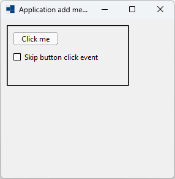
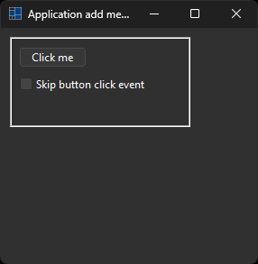
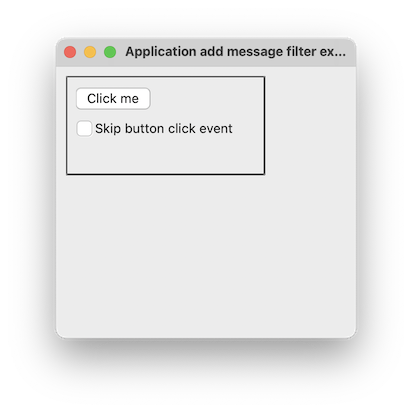
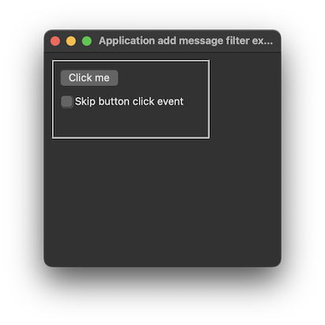
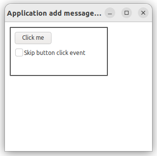
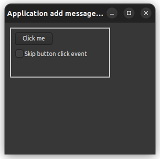

|
xtd
0.2.0
|
Loading...
Searching...
No Matches
application_add_message_filter.cpp
Shows how to create an application with xtd::forms::application::add_message_filter method.
- Windows
- 

- macOS
- 

- Gnome
- 

#include <xtd/forms/application>
#include <xtd/forms/button>
#include <xtd/forms/check_box>
#include <xtd/forms/debug_form>
using namespace xtd;
using namespace xtd::diagnostics;
using namespace xtd::forms;
namespace application_add_message_filter_example {
public:
main_form() {
text("Application add message filter example");
panel_.border_style(forms::border_style::groove);
skip_button_click_check_box_.auto_size(true);
click += [&] {debug::write_line(ustring::format("(form.click) x={}, y={}", mouse_position().x(), mouse_position().y()));};
button_.click += [&] {debug::write_line(ustring::format("(button.click) x={}, y={}", mouse_position().x(), mouse_position().y()));};
skip_button_click_check_box_.click += [&] {debug::write_line(ustring::format("(check_box.click) x={}, y={}", mouse_position().x(), mouse_position().y()));};
panel_.click += [&] {debug::write_line(ustring::format("(panel.click) x={}, y={}", mouse_position().x(), mouse_position().y()));};
}
private:
// Uncomment following line to see all messages.
//debug::write_line(ustring::format("message=[{}], control=[{}]", message.to_string(), from_handle(message.hwnd()).has_value() ? from_handle(message.hwnd()).value().get().to_string() : "(null)"));
return skip_button_click_check_box_.checked() && message.msg() == WM_LBUTTONDOWN && message.hwnd() == button_.handle();
}
debug_form debug_form_;
check_box skip_button_click_check_box_ = check_box::create(panel_, "Skip button click event", check_state::unchecked, {10, 40});
};
}
int main() {
xtd::forms::application::run(application_add_message_filter_example::main_form {});
}
static void run()
Begins running a standard application message loop on the current thread, without a form.
static void add_message_filter(const imessage_filter &value)
Adds a message filter to monitor Windows messages as they are routed to their destinations.
Represents a form that displays debug form. This class cannot be inherited.
Definition debug_form.h:34
Represents a window or dialog box that makes up an application's user interface.
Definition form.h:52
The xtd::diagnostics namespace provides classes that allow you to interact with system processes,...
Definition assert_dialog_result.h:10
The xtd::forms namespace contains classes for creating Windows-based applications that take full adva...
Definition xtd_about_box.h:12
The xtd namespace contains all fundamental classes to access Hardware, Os, System,...
Definition xtd_about_box.h:10
Generated on Thu Mar 7 2024 17:00:19 for xtd by Gammasoft. All rights reserved.